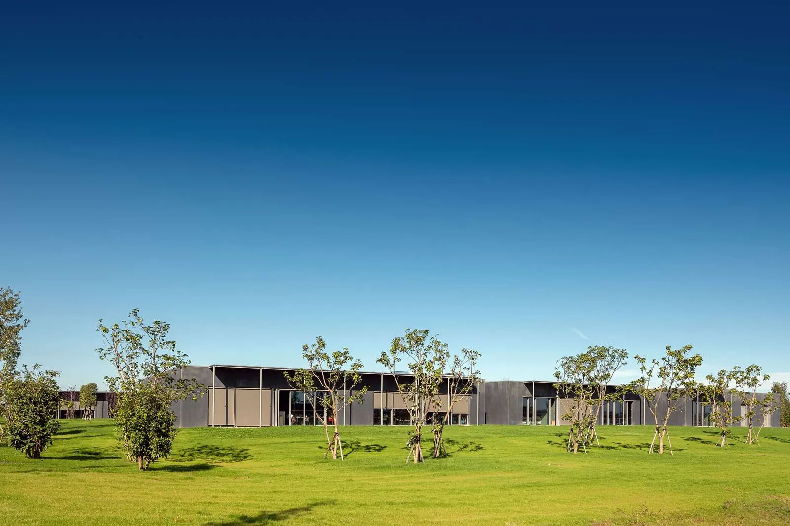
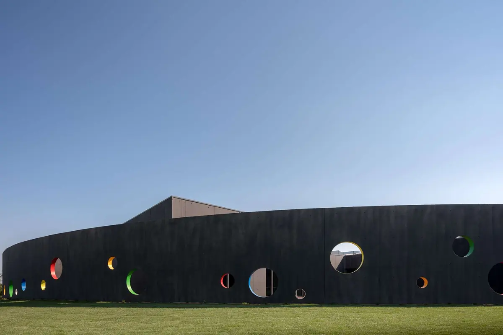

ZAA.MAS.HC
Educazione
H-FARM Campus
Roncade (TV)
2020
Trenta ettari lungo il Sile per studenti dalla scuola dell'infanzia all'università. Edifici in cemento dalle geometrie semplici, vetrate, patii e corti: qui è il paesaggio che ha guidato l'architettura, non il contrario.
Premio Architetto Italiano 2020, MIPIM Awards 2022, Casabella n. 925